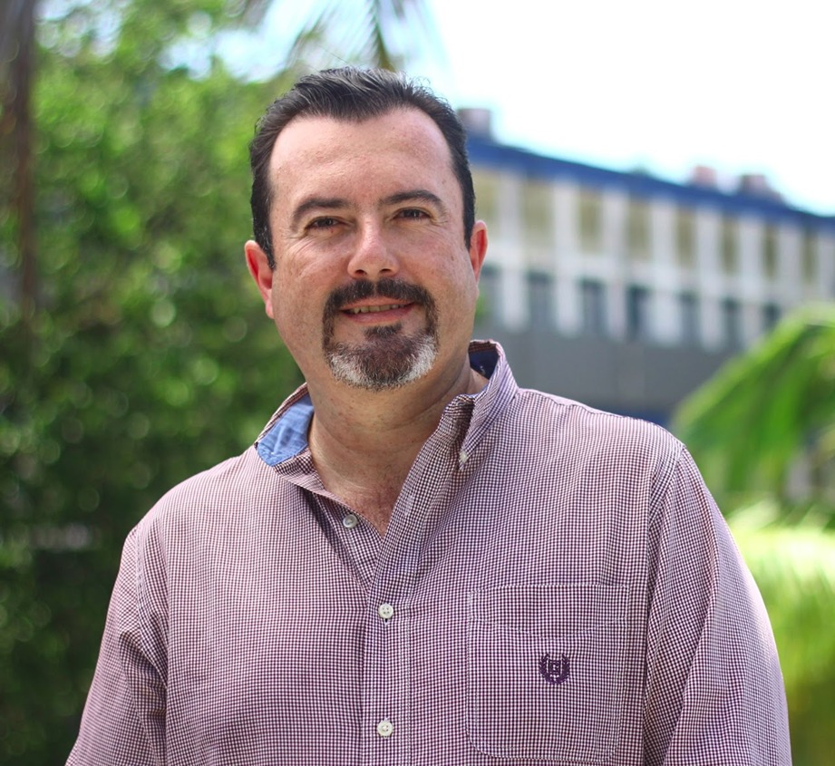
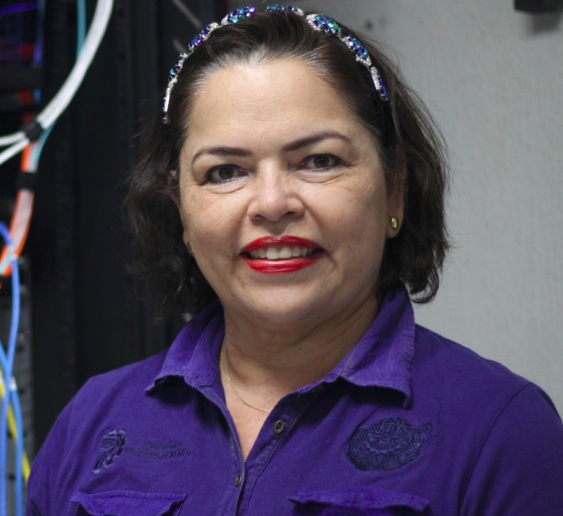
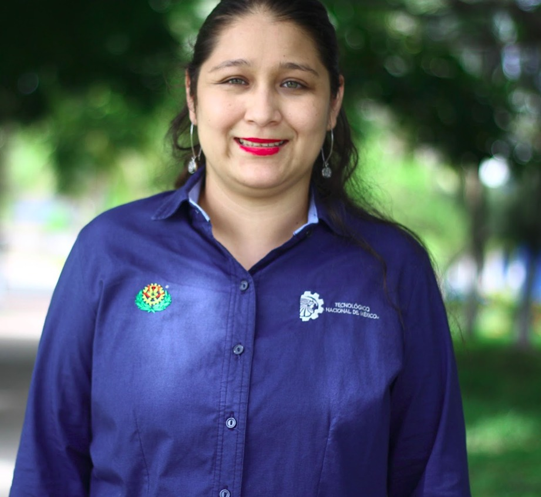
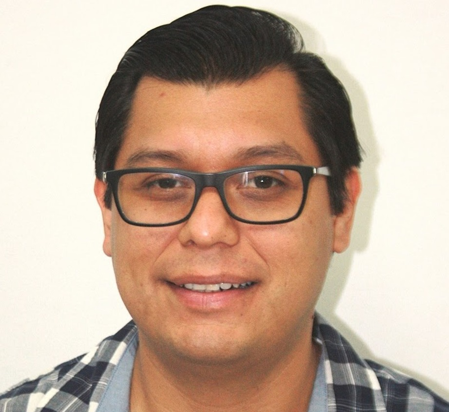
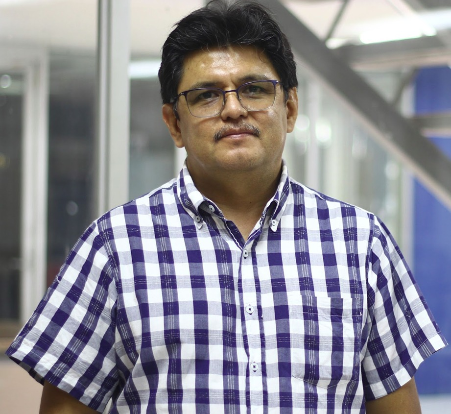
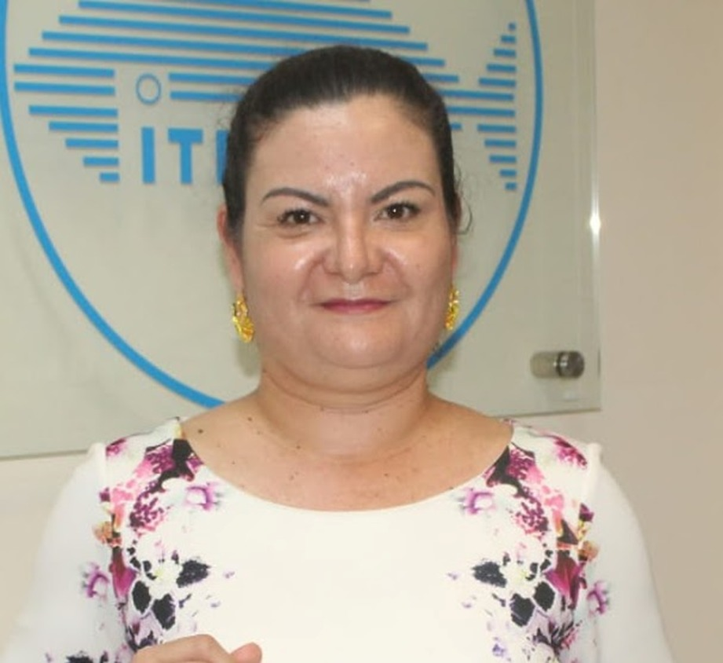
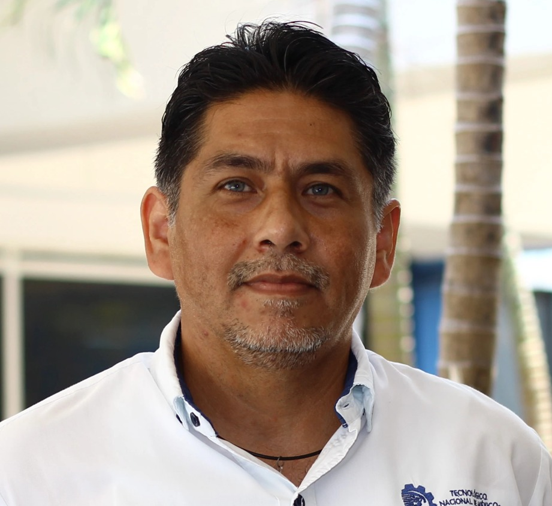
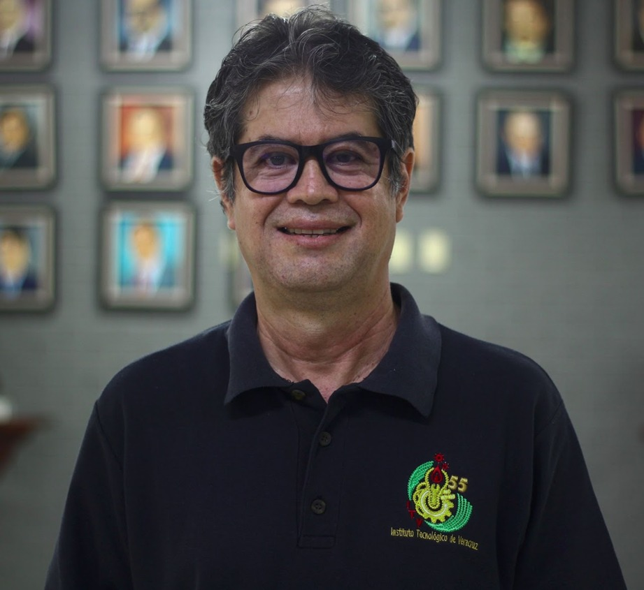
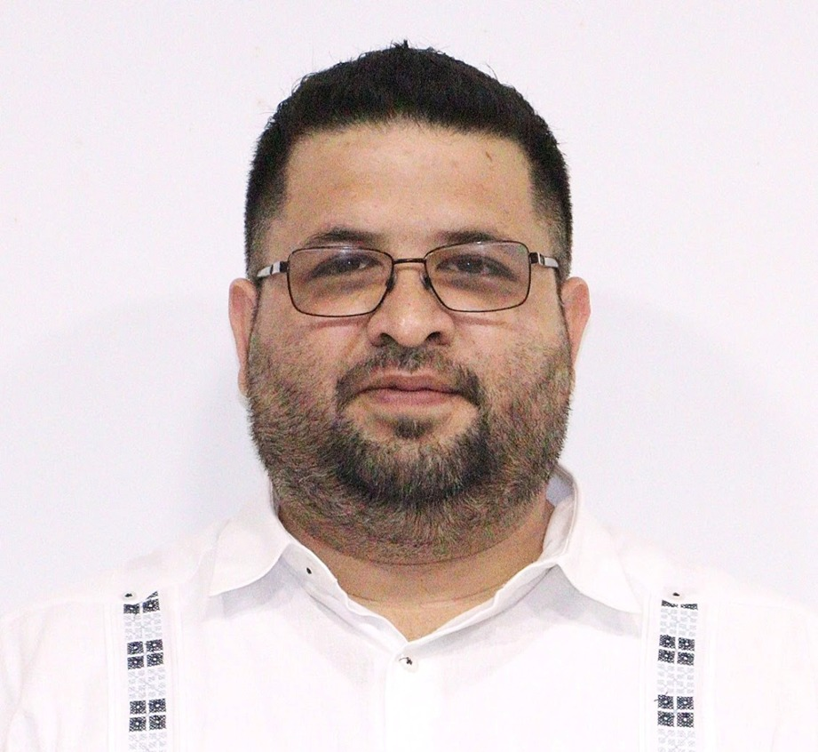
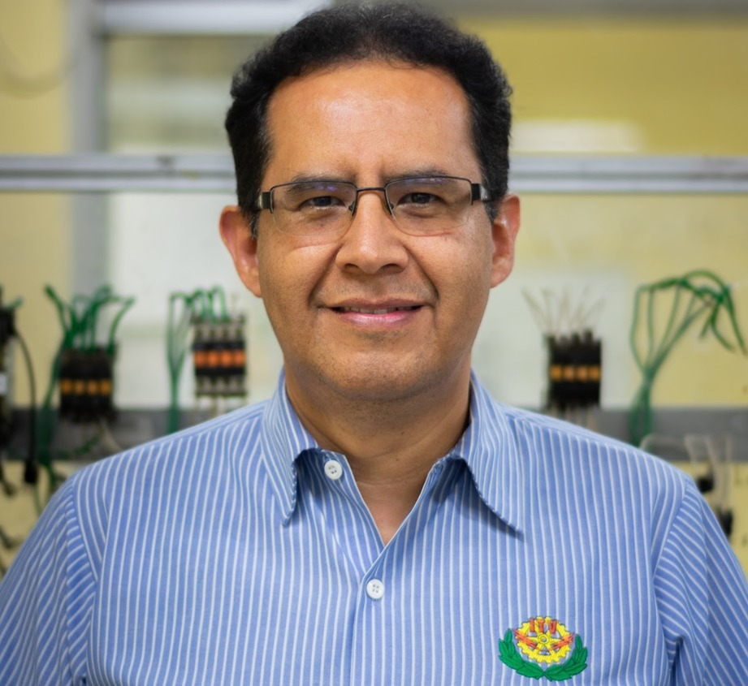

Relación de docentes que integran el núcleo académico del programa.
Núcleo académico
Docentes del programa.

Genaro Méndez López
Maestro en Sistemas de Información por el Instituto Tecnológico Rosenblueth
Egresado de Sistemas Computacionales del Instituto Tecnológico de Veracruz, con trayectoria docente y directiva en tecnologías de información.

Lizbeth Sánchez Ferrer
Maestra en Redes y Telecomunicaciones por la Universidad Cristóbal Colón
Docente con experiencia en redes, telecomunicaciones, investigación, diseño curricular, tesis y vinculación.

Primavera Argüelles Lucho
Doctora en Materiales y Nanociencias por la Universidad Veracruzana
Integrante del Sistema Nacional de Investigadores, nivel Candidato, con producción académica en materiales, sensores y sistemas microelectromecánicos.

Héctor Pérez Ortíz
Maestro en Redes y Telecomunicaciones por la Universidad Cristóbal Colón
Profesional especializado en gestión y administración de tecnologías de la información en sectores educativo y empresarial.

Rafael Rivera López
Doctor en Ciencias de la Computación por la Universidad Juárez Autónoma de Tabasco
Miembro del Sistema Nacional de Investigadores, nivel 1, con intereses en metaheurísticas, aprendizaje automático y modelos orientados a objetos.

Xóchitl Citlalli Hernández Silva
Doctora en Ciencias Ambientales por el TecNM Instituto Tecnológico de Boca del Río
Profesional con experiencia en gestión administrativa, docencia, desarrollo tecnológico y herramientas computacionales.

Martín Hernández Ordoñez
Maestro en Ingeniería Eléctrica por la Universidad Autónoma de San Luis Potosí
Miembro del Sistema Nacional de Investigadores, nivel 1, con trabajo en robótica, control inteligente y sistemas expertos.

Delio Coss Camilo
Maestro en Inteligencia Artificial por la UNIR
Docente con experiencia en programación, bases de datos, desarrollo web, sistemas operativos y fundamentos de investigación.

Arturo Pérez Rendón
Maestro en Tecnologías de Información por el Centro Universitario Hispano Mexicano
Especialista en gestión y administración de tecnologías de información en ámbitos educativo y empresarial.

Francisco Javier Gómez González
Doctor en Ingeniería y Producción Industrial por la Universidad Politécnica de Valencia, España
Académico del área eléctrica y electrónica con experiencia en energías renovables, sistemas híbridos y dirección de tesis.
Perfil docente
Formación
Maestro en Sistemas de Información por el Instituto Tecnológico Rosenblueth
Información académica
Egresado de la carrera en Sistemas Computacionales del Instituto Tecnológico de Veracruz, cuenta con Maestría en Sistemas de la Información por parte el Instituto Tecnológico Rosenblueth y con diploma en Blockchain Course por el Berkeley Fintech Institute de la Universidad de Berkeley California.
Se ha desempeñado como catedrático en los últimos 25 años, impartiendo ponencias y asignaturas enfocadas a sistemas computacionales en distintas instituciones.
Gerencia de Desarrollo de Sistemas, RECO.
Subgerencia de Informática, Administración Portuaria Integral de Veracruz.
Coordinación de Proyectos de Automatización, Tenaris Tamsa.
Dirección de Sistemas, H. Ayuntamiento de Veracruz.
Dirección de Administración y Dirección de Tecnologías de la Información en Grupo CICE.
Materias que ha impartido
Tópicos Avanzados de Programación
Graficación por Computadora
Transacciones Computacionales con Blockchain
Lenguaje Ensamblador
Análisis y Diseño Orientado a Objetos
Taller de Base de Datos II
Formación
Maestra en Redes y Telecomunicaciones por la Universidad Cristóbal Colón
Información académica
Egresada de Ingeniería en Sistemas Computacionales del Instituto Tecnológico de Veracruz y de la Maestría en Redes y Telecomunicaciones por la Universidad Cristóbal Colón.
Proyectos de investigación.
Cuerpos académicos.
Publicaciones y ponencias.
Certificaciones.
Diseño curricular a nivel nacional.
Configuración de redes.
Capacitación a empresas.
Asesoría de tesis de licenciatura y maestría.
Convenios con el sector privado y de gobierno.
Materias que ha impartido
Programación
Administración de centros de cómputo
Auditoría de datos
Taller de investigación
Telecomunicaciones
Redes de computadoras
Administración de redes
Formación
Doctora en Materiales y Nanociencias por la Universidad Veracruzana
Información académica
Ingeniera en Sistemas Computacionales, Maestra en Ingeniería Aplicada y Doctora en Materiales y Nanociencias. Ha participado en publicaciones de investigación, congresos y divulgación científica.
Trabajos relacionados con modelado de elementos finitos de sistemas microelectromecánicos.
Sensores de gas.
Síntesis química de óxido de titanio.
Materias que ha impartido
Tópicos selectos de programación
Graficación
Lenguajes y Autómatas I
Taller de base de datos
Ingeniería de materiales no metálicos
Tópicos selectos de física
Física y Física general
Formación
Maestro en Redes y Telecomunicaciones por la Universidad Cristóbal Colón
Información académica
Actualmente funge como Coordinador de Centro de Cómputo en el Instituto Tecnológico Superior de Alvarado, donde dirige infraestructura tecnológica, soporte técnico, migración a la nube y plataformas educativas como Moodle.
Su perfil integra administración de servidores, desarrollo de e-learning y docencia, con publicaciones académicas y participación en congresos de innovación tecnológica.
Jefe de Administración de Servidores y Aplicaciones en Fractal InsideDevelopment.
Jefe de Carrera de Ingeniería en Sistemas Computacionales.
Impulso de cuerpos académicos, proyectos de inclusión educativa y gestión de recursos PRODEP.
Formación
Doctor en Ciencias de la Computación por la Universidad Juárez Autónoma de Tabasco
Información académica
Ingeniero en Sistemas Computacionales por el Instituto Tecnológico de Veracruz, Maestro en Ciencias de la Computación por el Tecnológico de Monterrey y Doctor en Ciencias de la Computación por la Universidad Juárez Autónoma de Tabasco.
Actualmente es Profesor Investigador de Tiempo Completo del Departamento de Sistemas y Computación del Instituto Tecnológico de Veracruz.
Profesor con perfil deseable PRODEP.
Miembro del Sistema Nacional de Investigadores.
Miembro de REDICA, AMEXCOMP y SMCC.
Autor de artículos en revistas indexadas y congresos nacionales y extranjeros.
Materias que ha impartido
Fundamentos de Programación
Programación
Programación Orientada a Objetos
Graficación
Tópicos Avanzados de Programación
Inteligencia Artificial
Redes de Computadoras
Física
Análisis de Sistemas
IA en Ciencia de Datos
Formación
Doctora en Ciencias Ambientales por el TecNM Instituto Tecnológico de Boca del Río
Información académica
Ingeniera en Sistemas Computacionales con trayectoria en administración de presupuestos, control contable y gestión académica. Actualmente se desempeña como Jefa del Departamento de Recursos Financieros y catedrática en el Instituto Tecnológico de Boca del Río.
Experiencia en desarrollo de software.
Manejo de herramientas como OPUS y AUTOCAD.
Docencia en programación, matemáticas y física.
Dominio de inglés y japonés.
Materias que ha impartido
Álgebra Lineal
Informática
Programación
Matemáticas
Física
Formación
Maestro en Ingeniería Eléctrica por la Universidad Autónoma de San Luis Potosí
Información académica
Egresado de Ingeniería en Electrónica por el Instituto Tecnológico de Veracruz. Obtuvo maestría y doctorado por la Universidad Autónoma de San Luis Potosí. Actualmente está adscrito al Departamento de Metal-Mecánica y es responsable del laboratorio de Robótica e Inteligencia Artificial.
Líneas de investigación en análisis de sistemas complejos.
Sistemas expertos aplicados a sistemas robóticos y mecatrónicos.
Producción académica en robótica, control, aplicaciones médicas y educación con realidad aumentada.
Materias que ha impartido
Robótica
Control Inteligente
Instrumentación y control
Control
Simulación
Diseño Mecatrónico
Introducción a la Robótica móvil
Taller de investigación I y II
Formación
Maestro en Inteligencia Artificial por la UNIR
Información académica
Ha desarrollado trabajo académico sobre el impacto de las redes sociales en el rendimiento académico.
Impacto de las redes sociales en el rendimiento académico.
Materias que ha impartido
Fundamentos de programación
Programación orientada a objetos
Fundamentos de base de datos
Taller de base de datos
Administración de base de datos
Programación web
Gestores de contenido
Programación móvil
Sistemas operativos
Base de datos distribuidas
Fundamentos de investigación
Formación
Maestro en Tecnologías de Información por el Centro Universitario Hispano Mexicano
Información académica
Actualmente se desempeña como Jefe del Departamento de Sistemas y Computación. Cuenta con experiencia en administración de infraestructura tecnológica, soporte técnico, migración a la nube e implementación de plataformas educativas como Moodle.
Administración de servidores y aplicaciones.
Gestión de VPNs, LMS y políticas de TI.
Gestión de recursos PRODEP y proyectos de inclusión educativa.
Publicaciones académicas y congresos sobre innovación tecnológica y educación.
Formación
Doctor en Ingeniería y Producción Industrial por la Universidad Politécnica de Valencia, España
Información académica
Ingeniero Industrial en Eléctrica por el Instituto Tecnológico de Veracruz, Maestro en Ciencias en Ingeniería Eléctrica por el Instituto Tecnológico de la Laguna, Especialista Universitario en Diseño de Sistemas Digitales y Doctor en Ingeniería y Producción Industrial por la Universidad Politécnica de Valencia.
Su campo de interés e investigación se centra en sistemas de generación híbridos basados en energías renovables.
Jefe de Departamento.
Jefe de Proyecto Docente.
Jefe de Proyecto de Investigación.
Publicación de artículos sobre sistemas de generación híbridos y energías renovables.